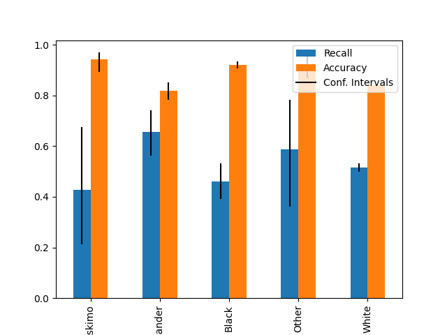
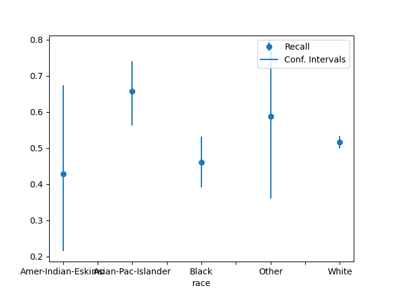

Note
Click here to download the full example code
Plotting Metrics with Errors#
import numpy as np
from sklearn.compose import ColumnTransformer
from sklearn.compose import make_column_selector as selector
from fairlearn.datasets import fetch_adult
from sklearn.impute import SimpleImputer
from sklearn.metrics import accuracy_score, confusion_matrix, recall_score
from sklearn.model_selection import train_test_split
from sklearn.pipeline import Pipeline
from sklearn.preprocessing import OneHotEncoder, StandardScaler
from sklearn.tree import DecisionTreeClassifier
from sklearn.utils import check_consistent_length
Load and preprocess the data set#
We start by importing the various modules we’re going to use:
from fairlearn.experimental.enable_metric_frame_plotting import plot_metric_frame
from fairlearn.metrics import MetricFrame
We download the data set using the function fetch_adult() in fairlearn.datasets.
The original Adult data set can be found at https://archive.ics.uci.edu/ml/datasets/Adult
There are some caveats to using this dataset, but we will use it solely as an example
to demonstrate the functionality of plotting metrics with error bars.
We use a pipeline to preprocess the data then use a
sklearn.tree.DecisionTreeClassifier to make predictions
data = fetch_adult(as_frame=True)
X = data.data
y = (data.target == ">50K").astype(int)
X_train, X_test, y_train_true, y_test_true = train_test_split(
X, y, test_size=0.33, random_state=42
)
numeric_transformer = Pipeline(
steps=[
("impute", SimpleImputer()),
("scaler", StandardScaler()),
]
)
categorical_transformer = Pipeline(
[
("impute", SimpleImputer(strategy="most_frequent")),
("ohe", OneHotEncoder(handle_unknown="ignore", sparse=False)),
]
)
preprocessor = ColumnTransformer(
transformers=[
("num", numeric_transformer, selector(dtype_exclude="category")),
("cat", categorical_transformer, selector(dtype_include="category")),
]
)
complete_pipeline = Pipeline(
[
("preprocessor", preprocessor),
(
"estimator",
DecisionTreeClassifier(min_samples_leaf=10, max_depth=4),
),
]
)
complete_pipeline.fit(X_train, y_train_true)
y_test_pred = complete_pipeline.predict(X_test)
test_set_sex = X_test["race"]
/home/circleci/.pyenv/versions/3.8.12/lib/python3.8/site-packages/sklearn/preprocessing/_encoders.py:808: FutureWarning: `sparse` was renamed to `sparse_output` in version 1.2 and will be removed in 1.4. `sparse_output` is ignored unless you leave `sparse` to its default value.
warnings.warn(
Confidence interval calculations#
We have many different choices for calculating confidence intervals. In this notebook we’ll just be using a Wilson score interval.
# We aim to create a 95% confidence interval, so we use a :code:`z_score` of 1.959964
z_score = 1.959964
digits_of_precision = 4
error_labels_legend = "95% Confidence Interval"
def general_wilson(p, n, digits=4, z=1.959964):
"""Return lower and upper bound of a Wilson confidence interval.
Parameters
----------
p : float
Proportion of successes.
n : int
Total number of trials.
digits : int
Digits of precision to which the returned bound will be rounded
z : float
Z-score, which indicates the number of standard deviations of confidence.
The default value of 1.959964 is for a 95% confidence interval
Returns
-------
np.ndarray
Array of length 2 of form: [lower_bound, upper_bound]
"""
denominator = 1 + z**2 / n
centre_adjusted_probability = p + z * z / (2 * n)
adjusted_standard_deviation = np.sqrt((p * (1 - p) + z * z / (4 * n))) / np.sqrt(n)
lower_bound = (
centre_adjusted_probability - z * adjusted_standard_deviation
) / denominator
upper_bound = (
centre_adjusted_probability + z * adjusted_standard_deviation
) / denominator
return np.array([round(lower_bound, digits), round(upper_bound, digits)])
def recall_wilson(y_true, y_pred):
"""Return a Wilson confidence interval for the recall metric.
Parameters
----------
y_true : array-like of shape (n_samples,)
Ground truth labels
y_pred : array-like of shape (n_samples,)
Predicted labels
Returns
-------
np.ndarray
Array of length 2 of form: [lower_bound, upper_bound]
"""
check_consistent_length(y_true, y_pred)
tn, fp, fn, tp = confusion_matrix(y_true, y_pred).ravel()
bounds = general_wilson(tp / (tp + fn), tp + fn, digits_of_precision, z_score)
return bounds
def accuracy_wilson(y_true, y_pred):
"""Return a Wilson confidence interval for the accuracy metric.
Parameters
----------
y_true : array-like of shape (n_samples,)
Ground truth labels
y_pred : array-like of shape (n_samples,)
Predicted labels
Returns
-------
np.ndarray
Array of length 2 of form: [lower_bound, upper_bound]
"""
check_consistent_length(y_true, y_pred)
score = accuracy_score(y_true, y_pred)
bounds = general_wilson(score, len(y_true), digits_of_precision, z_score)
return bounds
MetricFrame#
Now we create a fairlearn.metrics.MetricFrame to generate the Wilson bounds for accuracy and recall
# Analyze metrics using :class:`fairlearn.metrics.MetricFrame`
metrics_dict = {
"Recall": recall_score,
"Recall Bounds": recall_wilson,
"Accuracy": accuracy_score,
"Accuracy Bounds": accuracy_wilson,
}
metric_frame = MetricFrame(
metrics=metrics_dict,
y_true=y_test_true,
y_pred=y_test_pred,
sensitive_features=test_set_sex,
)
Plotting#
Plot metrics without confidence intervals#
plot_metric_frame(metric_frame, kind="point", metrics=["Recall", "Accuracy"])
array([<AxesSubplot: xlabel='race'>, <AxesSubplot: xlabel='race'>],
dtype=object)
Plot metrics with confidence intervals (possibly asymmetric)#
plot_metric_frame(
metric_frame,
kind="bar",
metrics=["Recall", "Accuracy"],
conf_intervals=["Recall Bounds", "Accuracy Bounds"],
plot_ci_labels=True,
subplots=False,
)
plot_metric_frame(
metric_frame,
kind="point",
metrics="Recall",
conf_intervals="Recall Bounds",
)
- 
- 
array([<AxesSubplot: xlabel='race'>], dtype=object)
Plot metrics with error labels#
plot_metric_frame(
metric_frame,
kind="bar",
metrics="Recall",
conf_intervals="Recall Bounds",
colormap="Pastel1",
plot_ci_labels=True,
)
array([<AxesSubplot: title={'center': 'Recall'}, xlabel='race'>],
dtype=object)
Plots all columns and treats them as metrics without error bars#
plot_metric_frame(metric_frame, kind="bar", colormap="rainbow", layout=[1, 2])
array([[<AxesSubplot: title={'center': 'Recall'}, xlabel='race'>,
<AxesSubplot: title={'center': 'Accuracy'}, xlabel='race'>]],
dtype=object)
Customizing plots#
plot_metric_frame() returns an Axes object that we can customize futher.
axs = plot_metric_frame(
metric_frame,
kind="point",
metrics=["Recall", "Accuracy"],
conf_intervals=["Recall Bounds", "Accuracy Bounds"],
subplots=True,
ci_labels_legend=error_labels_legend,
# the following parameters are passed into `pandas.DataFrame.plot` as kwargs
layout=[1, 2],
rot=45,
colormap="rainbow",
figsize=(12, 4),
)
axs[0][0].set_ylabel("Recall")
axs[0][0].set_title("Recall Plot")
axs[0][1].set_title("Accuracy Plot")
axs[0][0].set_xlabel("Race")
axs[0][1].set_xlabel("Race")
axs[0][0].set_ylabel("Recall")
axs[0][1].set_ylabel("Accuracy")
# Set the y-scale for both metrics to [0, 1]
axs[0][0].set_ylim((0, 1))
axs[0][1].set_ylim((0, 1))
(0.0, 1.0)
Total running time of the script: ( 0 minutes 2.875 seconds)